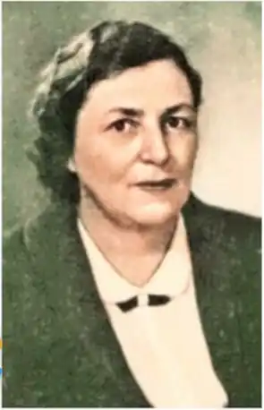

Марія Аркадіївна Пригара народилася 20 лютого 1908 року в Москві у родині службовця. Згодом батьки переїхали до Криворіжжя, де маленька непосидюча дівчинка насолоджувалась чарами степу, залюбки бігала понад озером до школи, захоплювалась милозвучністю народних пісень, поезією українських дум, які навчив любити батько. Через деякий час сім'я переїхала в Київ, а потім — у Білу Церкву. Не раз доводилось терпіти злигодні, виконувати роботу не по літах: підводити призьбу, мазати хату, порядкувати в ній, хоч малій господарочці і рогача втримати в руках було важко.
Справжня література ввійшла в життя Марії Аркадіївни в Одесі, куди вона переїхала шістнадцятирічної дівчиною. Тому, коли постала проблема вибору професії, спочатку думала бути медиком, як мати, але переважила любов до поезії. Марія Пригара стала студенткою Одеського інституту народної освіти. Восени 1924 року в місцевій газеті з'явився її перший вірш "Повстанець".
Працювала в газеті "Пролетарська правда", у видавництвах. Під час війни — на радіостанції імені Т. Г. Шевченка в Саратові. У 1945-1950 роках була заступником редактора журналу "Барвінок". Перші книжки для дітей вийшли 1929 року. Це "Весна на селі" та "Дитячий садок". Десятки книжок Марії Пригари виховували в кількох поколіннях українських дітей любов до батьківщини, її історії й природи. Це й пейзажні поезії "Ми любим сонце і весну", і "Місто чудес", і особливо такі історичні казки й повісті, як "Козак Голота" (1966), "Михайлик — джура козацький", "Як три брати з Азова тікали", "Маруся Богуславка", "Тече Дніпро в синє море" та інші. За "Вибрані твори: В 2-х томах" (1978) Марія Пригара була удостоєна премії імені Лесі Українки (1979). Іншу грань ліричної героїні поетеси розкривають її збірки "дорослої" лірики: "Дорогою війни" (1944), "Напередодні" (1947), "Сестри" (1948), "Надвечір'я" (1977). Плідно працювала Марія Пригара у царині художнього перекладу, переважно з польської, якою письменниця володіла досконало. її перу належать українські переклади роману "Фараон" Б. Пруста, поеми М. Некрасова "Кому на Русі жити добре?", романів та повістей Ванди Василевської "Вогні на болотах", "Райдуга", "Просто любов". "Кімната на горищі", "Пісня над водами", романів В. Реймонта "Селяни", Елізи Ожешко "Хам", Єжи Путрамен та "Роздоріжжя". Пішла з життя Марія Аркадіївна Пригара 8 вересня 1983 року. На київському будинку, що на вулиці Михайла Коцюбинського, на знак вшанування її пам'яті встановлено меморіальну дошку.